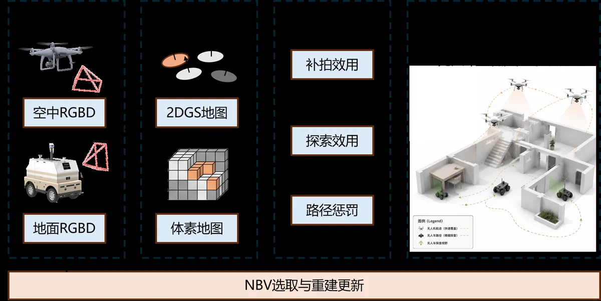
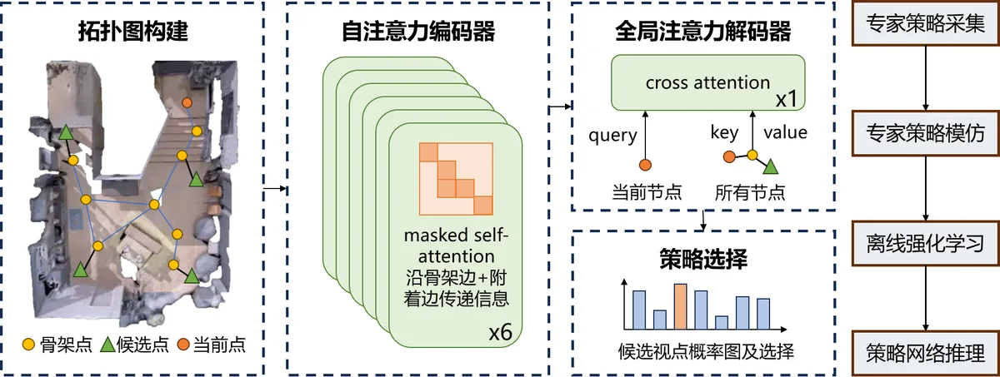

Reconstructing a large scene with 3D/2D Gaussian splatting is a trade-off between flight time and coverage. I learn a policy that decides where to look next.用 3D/2D 高斯泼溅重建大场景，本质是「采集时间」和「覆盖率」的两难。我训练一个策略，让它决定下一步该看哪儿。
Path length against coverage under an equal time budget (grey: teacher, blue: BC, red: RL)相同时长下的路径长度 / 覆盖率曲线（灰：教师，蓝：BC，红：RL）01
Motivation动机
With a fixed time budget, where the robot looks matters more than how good each frame is. Hand-designed coverage patterns are safe, but they do not know what has already been reconstructed well.
A viewpoint-sampling baseline with topology-aware ordering, used to improve expert trajectories.
A teacher–BC–RL pipeline: an expert planner generates trajectories, behaviour cloning bootstraps a policy, and offline RL pushes it past the teacher.
Evaluation under an equal time budget, comparing path length against coverage.
基于视点采样的基线，用拓扑感知的排序改进专家轨迹。
教师–BC–RL 流水线：专家规划器生成轨迹，行为克隆起步，再用离线强化学习超过教师。
在相同时长预算下评估，比较路径长度与覆盖率。

Viewpoint-sampling baseline视点采样基线

Learned policy学习得到的策略
03
Results效果
In the same time budget the learned policy covers more of the scene than the expert planner it was cloned from, and takes a shorter route to get there.
在同样的时间预算里，学出来的策略比它模仿的专家规划器覆盖得更多，路径也更短。
Coverage animation: viewpoint sampling versus the learned policy覆盖过程动画：视点采样 vs 学习策略